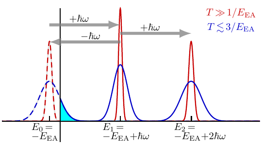
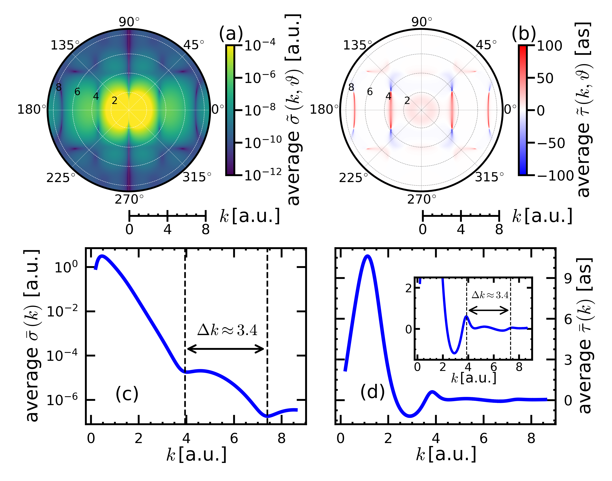

Research
What an electron wave reveals.
I study how short light pulses eject electrons, and how atomic and molecular potentials shape their timing, direction, and phase.
My work connects attosecond physics, molecular scattering, and scientific computing. I develop the theory and numerical tools needed to move from a molecular potential to observables that can be compared with experiment.
Short pulses & negative ions
The zero-energy photoelectric effect
Published · Physical Review Letters · 2025
A short light pulse can release very slow electrons from a weakly bound negative ion, even when its photon energy is well above the binding energy.
We predicted this effect for systems such as H− and O−. The outgoing electron absorbs a photon from the pulse and emits another into it, producing a low-energy peak whose scale is set by the pulse duration. This photon exchange also connects to the infrared probe step in attosecond interferometry.
My contribution. First-author theoretical study with Ulf Saalmann and Jan-Michael Rost, building on my work on ionization with tailored laser pulses.


Molecular symmetry & phase
Diffraction in the timing of photoemission
Current manuscript · Submitted to Physical Review Letters
Molecular symmetry leaves signatures in both the direction and timing of an emitted electron. In my current first-author study of photodetachment from C8F8−, I examine how these signatures connect to the topology of the electron wave.
Isolated amplitude zeros in the energy–angle plane support phase windings of +2π or −2π. Mirror-related zeros carry opposite windings, while analysis of scattering-matrix poles links low-energy structures to shape resonances.
Research thread. This follows earlier work on diffraction patterns in photoionization delays using model potentials. The linked 2024 preprint and the current submitted manuscript are listed separately.


Scientific software
eMOL: from molecular potentials to electron waves
I developed eMOL from scratch for molecular photoionization and photodetachment, keeping amplitudes and phase conventions accessible throughout the calculation. It combines Hartree–Fock target states and exact exchange with model potentials for correlation and polarization.
The code treats closed- and open-shell molecules, calculates one- and two-photon amplitudes, and allows independent XUV and infrared polarizations. Prescribed model potentials provide controlled tests alongside molecular calculations.
Explore the calculations. The N2 and H2O pages connect cross sections, angular distributions, and phase-sensitive observables to their molecular and laboratory frames. H2O calculations are still running; its displayed data are preliminary.
Connecting calculations with experiment
For a study of attosecond ionization delays in unsaturated hydrocarbons with the Wörner group at ETH Zürich, I carried out the electron-scattering calculations. The work examines how orbital delocalization affects measured delays.
Future directions
Recovering the angular phase
Proposed research
The Eisenbud–Wigner–Smith (EWS) time delay describes how an electron wave’s phase changes with energy. I want to recover how phase changes with emission direction: an angular phase gradient, rather than a time interval.
My proposed programme asks whether direction mixing by an infrared probe can reveal phase information that electron yields and timing alone leave undetermined. A central question is how accurately the probe must be known to separate its influence from the molecule’s phase structure.
The approach starts with controlled model tests, then examines molecular data and the effects of experimental averaging near amplitude zeros. The aim is to establish both what can be recovered and where the reconstruction becomes unreliable.
Methods & teaching
Computation that supports the physics
At the Leibniz Supercomputing Centre, I work on scientific software, performance, and user support. My work includes CPU and GPU benchmarking, parallel programming with MPI, OpenMP, SYCL, and Kokkos, and understanding the cost of moving data between processors.
I also teach heterogeneous programming with Kokkos. These activities support the development of scalable molecular calculations and the practical skills needed to maintain scientific software.